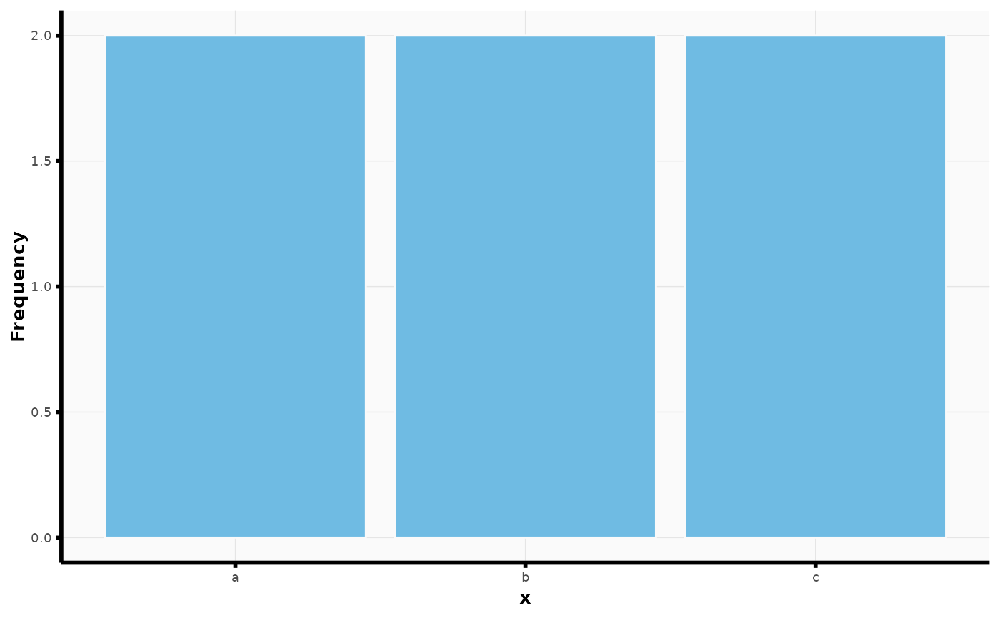
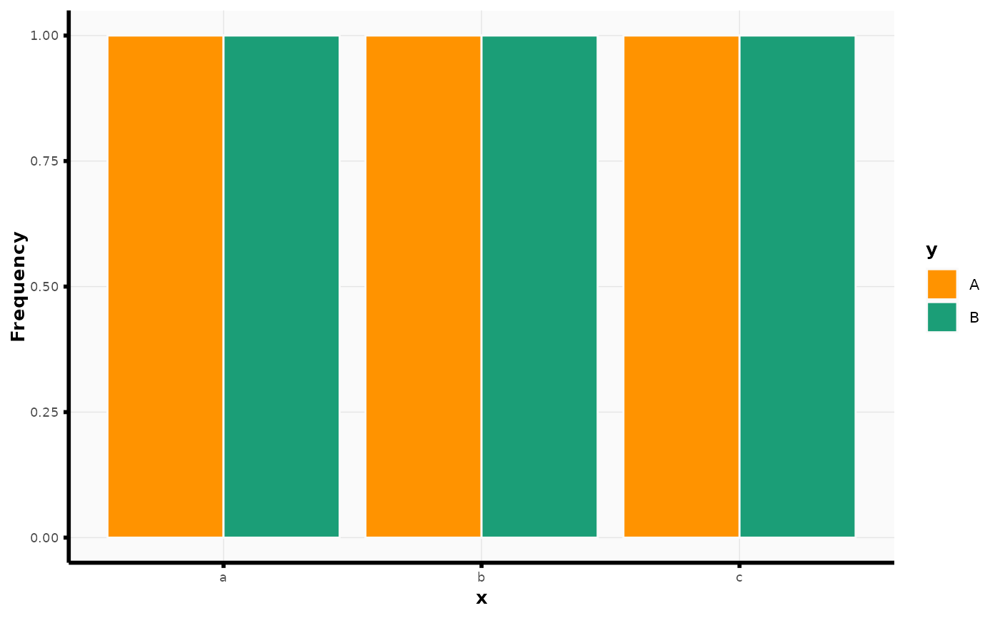

Bar plot wrapper for ggplot2
plot_bar.RdConvenient wrapper function around ggplot2::geom_bar().
Usage
plot_bar(
data,
x_str,
y_str = NULL,
fill_str = NULL,
fill = "#6FBBE3",
stat = "count",
position = "dodge",
...
)Arguments
- data
The data to be displayed in this layer. There are three options:
If
NULL, the default, the data is inherited from the plot data as specified in the call toggplot().A
data.frame, or other object, will override the plot data. All objects will be fortified to produce a data frame. Seefortify()for which variables will be created.A
functionwill be called with a single argument, the plot data. The return value must be adata.frame, and will be used as the layer data. Afunctioncan be created from aformula(e.g.~ head(.x, 10)).- x_str
Character string. Name of variable in
datato plot on x-axis.- y_str
Character string. Name of variable in
datato plot on y-axis. Used only ifstat = "identity".- fill_str
Character string. Name of variable in
datato use as fill aesthetic in plot.- fill
Fill color. Only used if
fill_strisNULL.- stat
See
ggplot2::geom_bar().- position
A position adjustment to use on the data for this layer. This can be used in various ways, including to prevent overplotting and improving the display. The
positionargument accepts the following:The result of calling a position function, such as
position_jitter(). This method allows for passing extra arguments to the position.A string naming the position adjustment. To give the position as a string, strip the function name of the
position_prefix. For example, to useposition_jitter(), give the position as"jitter".For more information and other ways to specify the position, see the layer position documentation.
- ...
Other arguments to pass to
ggplot2::geom_bar().
Examples
df <- data.frame(x = rep(letters[1:3], 2), y = rep(LETTERS[1:2], 3))
plot_bar(data = df, x_str = "x")

plot_bar(df, x_str = "x", fill_str = "y")
